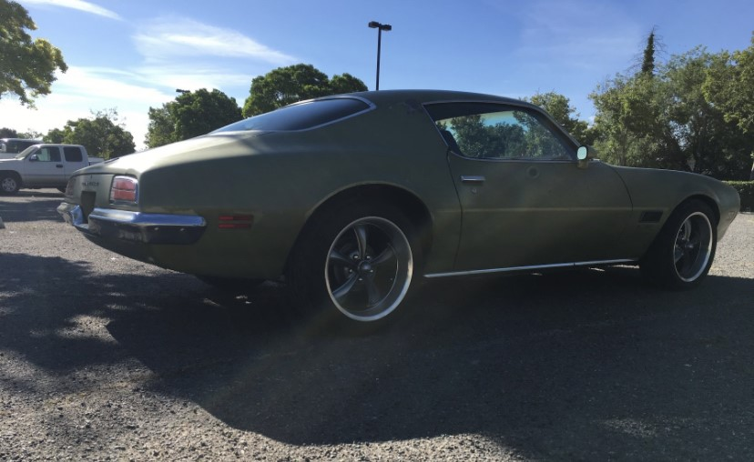
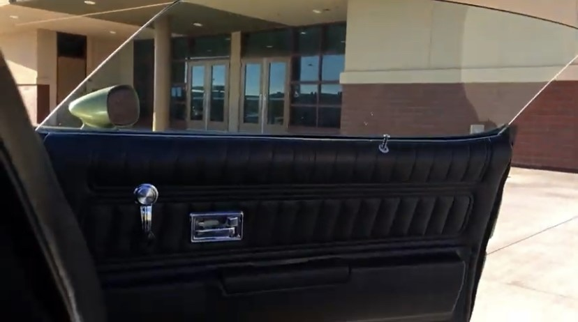

Transmission
The transmission was rebuilt by a local transmission shop. The transmission now shifts harder because of the way it was rebuilt and the internals that were used. It will be able to handle the engine's power which is very important. It is the original transmission that came with the car.

Suspension
The suspension was rebuilt using a kit from a distributor out of Chicago. The car was lowered and was upgraded with a sport-feeling suspension. The lowered suspension with the 18 inch Ridler wheels give the car an aggressive stance.
Interior
The interior was upgraded with new carpet, new door panels, and other various modifications that gave the interior a nicer, yet sportier look and feel. Project Limekist came factory with black interior, which was rarer than the common green on green look of the 70's.
